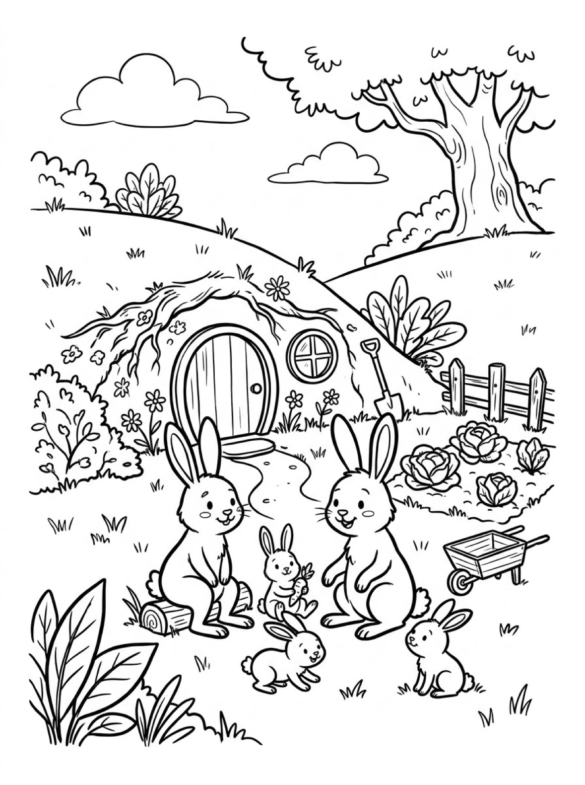
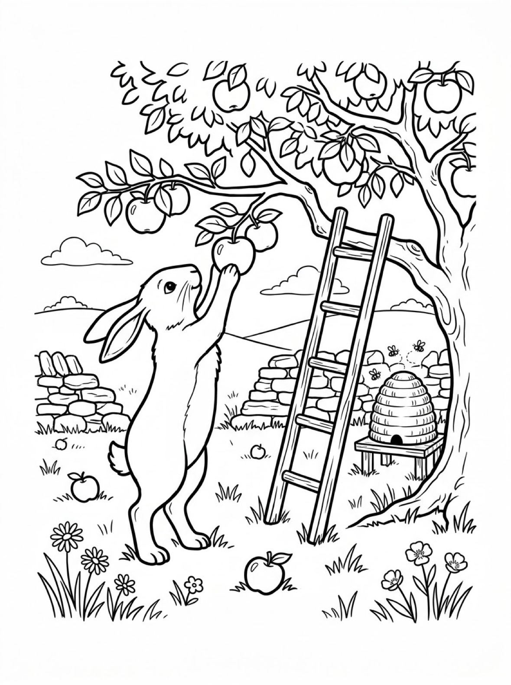

Free Bunny Coloring Pages Garden, Burrow & Orchard Printables
These free bunny coloring pages follow three garden bunnies through a flower patch, a family burrow, and an apple orchard. Download them below, print at home on letter-size paper, and let the coloring fun begin. No signup needed.
Last updated: October 21, 2026
Quick Answer
Yes — this page has three free printable bunny coloring pages: a bunny with a basket of carrots in a flower garden, a bunny family outside their burrow home, and a bunny reaching for an apple in an orchard. Bold outlines and big spaces, made for little hands. Download, print on letter-size paper, and hand over the crayons — no signup, no cost.
At a Glance
- Ages: 3–8
- Pages: 3 free printables
- Format: Print at home, letter size
- Cost: Free, no signup
- Supplies: Crayons or markers
- Time: 10–20 minutes
🐰 Bunny with a Carrot Basket Coloring Page

🎨 Download Your Free Bunny Garden Coloring Page
A bunny nibbling clover beside a woven basket of carrots, with a picket fence, burrow and flowering tree behind — bold outlines, big spaces, zero signup.
⬇️ Download Free Garden Bunny Page 🖨️ Print Garden Bunny Page🎁 Free printable for preschoolers & kids
🐰 Bunny Family at the Burrow Coloring Page

🎨 Download Your Free Bunny Family Coloring Page
Two parent bunnies and three baby bunnies outside their hillside burrow home, with a cabbage patch and wheelbarrow — bold outlines, big spaces, zero signup.
⬇️ Download Free Bunny Family Page 🖨️ Print Bunny Family Page🎁 Free printable for preschoolers & kids
🐰 Bunny Picking an Apple Coloring Page

🎨 Download Your Free Bunny Orchard Coloring Page
A bunny standing tall to reach an apple in an orchard tree, with a ladder, stone wall and beehive nearby — bold outlines, big spaces, zero signup.
⬇️ Download Free Orchard Bunny Page 🖨️ Print Orchard Bunny Page🎁 Free printable for preschoolers & kids
More Coloring Pages
Tap any picture to open its theme page and download the free printable.


🐰 How To Use This Page
- Browse the three designs and pick the bunny scene your child will love most.
- Tap download or print under that design — the file opens full-size, ready for letter-size paper.
- Print a couple of copies of the burrow family — five bunnies means five different color plans.
- Color together with crayons or markers and display the finished garden story.
🐰 Why Kids Love Bunny Coloring Pages
Bunnies are built for coloring: long ears, round bodies and fluffy tails give kids big, friendly shapes to fill, and every bunny looks right in any color — soft gray, warm brown, snowy white, or full rainbow. Each design on this page puts its bunny in a real little world of gardens, burrows and orchards, so coloring one feels like visiting it.
Bunny pages also grow with your child. A toddler can fill the bunny's body in one happy color and be done. An older kid can spend twenty minutes on the carrot tops, the cabbage leaves and the individual flowers — on the very same page. Few printables serve a 3-year-old and an 8-year-old equally well; these do.
🐾 Meet the Three Bunny Scenes on This Page
The bunny with the carrot basket. A bunny nibbles clover in a flower garden beside a woven basket brimming with carrots. A picket fence runs behind it, butterflies and a bee drift overhead, and its burrow waits under the roots of a flowering tree. Daisies, poppies and clover fill the bottom of the page, so this design is half bunny, half garden — a lovely pick for kids who love coloring flowers as much as animals.
The bunny family at the burrow. Two parent bunnies sit with three baby bunnies outside their hillside burrow home — a round wooden door and window built right into the hill. A cabbage patch, a wheelbarrow and a shovel leaning by the door show this family gardens for its dinner. It is the fullest scene in the set and the best one for storytelling: who lives in the burrow, and which baby bunny is which?
The bunny in the orchard. A bunny stands tall on its hind legs, paws reaching for a ripe apple in an orchard tree. A ladder leans against the trunk — the bunny prefers its own way up — while a beehive hums on its stand by a stone wall and fallen apples dot the grass. The tall composition and the tree's leafy canopy make this the most detailed page in the set.
✏️ Bunny Coloring Tips
- Try real bunny colors, then wild ones. Start with gray, brown or white fur and a pink inner ear — then print a second copy and let your child invent a blue bunny with purple ears.
- The ears are the detail spot. Long bunny ears are perfect for practicing two-tone coloring: one color on the outside, a softer color on the inside.
- Count as you color. How many carrots are in the basket? How many baby bunnies live at the burrow? Coloring pages double as gentle counting practice.
- Display the set together. The three designs tell one garden story — tape them in a row and let your child narrate it.
🐰 Coloring Pages for Different Ages
For ages 3 to 4, start with the bunny and the carrot basket. The bunny is one big shape, the basket is a satisfying chunk of pattern, and the garden flowers can be colored in any order — or saved for another day entirely.
For ages 5 to 6, the burrow family is the sweet spot. Five bunnies in different sizes mean five chances to choose fur colors, and the cabbage patch, wheelbarrow and burrow door add just enough extra detail to feel like a real project.
For ages 7 to 8, hand over the orchard page. The leafy canopy, the ladder, the stone wall and the beehive all reward patience, and the tall standing bunny is a fun challenge to shade evenly from ears to toes.
🌷 More Bunny Fun After Coloring
Ask your child to name the bunnies. The burrow page has five — naming all five and deciding who is who can take longer than the coloring itself, and writing the names under each bunny turns the page into a family portrait worth keeping.
Pair this page with the bunny drawing tutorial: draw a bunny in six steps first, then color one of these printables. In spring, these pages also sit nicely next to the Easter coloring pages — garden bunnies all year round, egg-hunting bunnies at Easter.
🔗 More Free Printables You’ll Love
- Free Easter Coloring Pages Egg hunts, baskets and spring bunnies to print and color.
- Free Spring Coloring Pages Flowers, butterflies and spring scenes for little learners.
- Free Animal Coloring Pages Free printable animal coloring pages for little learners.
- All Free Coloring Pages Browse every free coloring page on the site, organized by theme.
❓ Bunny Coloring Pages FAQ
Are these bunny coloring pages really free?
Yes — all three designs on this page are free original printables from MomYouNeedThis. Download them, print them at home, and color — no signup and no cost.
What ages are these coloring pages best for?
Kids ages 3 to 8 get the most from this set. The garden bunny is the gentlest start for younger children, while the burrow and orchard scenes have the detail older kids enjoy.
How do I print a coloring page?
Tap the download button under the design you want, then print the file on regular letter-size paper. The print button opens the full-size page in a new tab if you prefer to print from there.
Are these Easter bunny pages?
No — these are everyday garden bunnies, with carrots, cabbages and apples instead of Easter eggs. For egg hunts and Easter baskets, visit the Easter coloring pages on this site.
Can I make a coloring book from these pages?
Yes — print all three designs, stack them in order, and staple along the left edge. Add a cover sheet with your child's name for a finished homemade bunny coloring book.